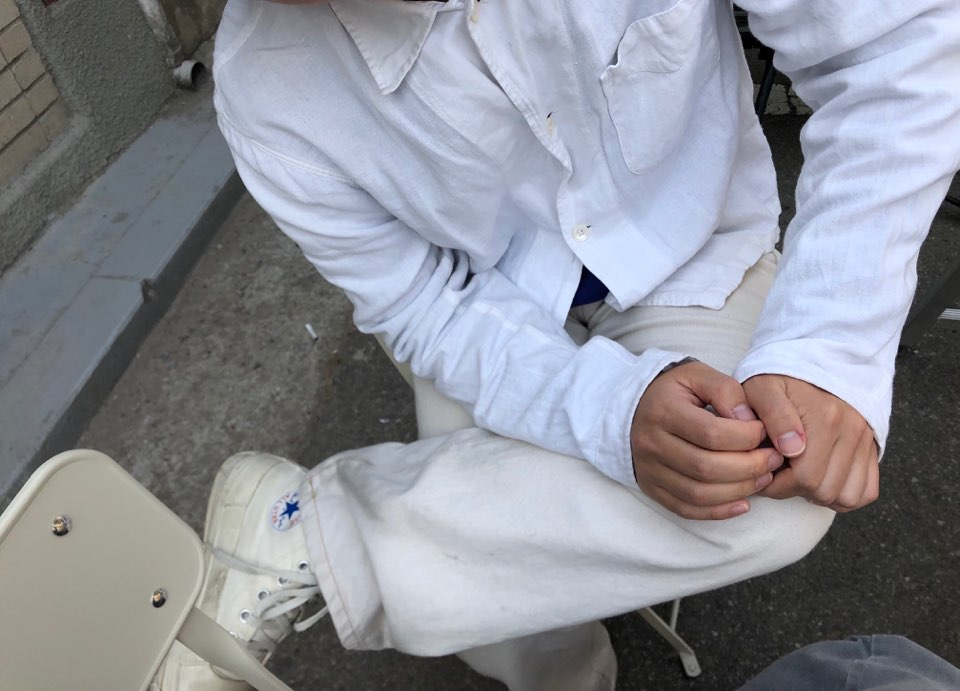
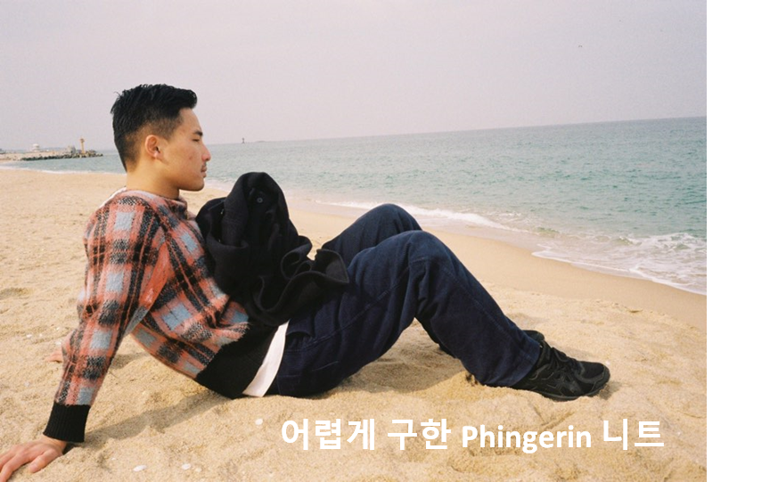
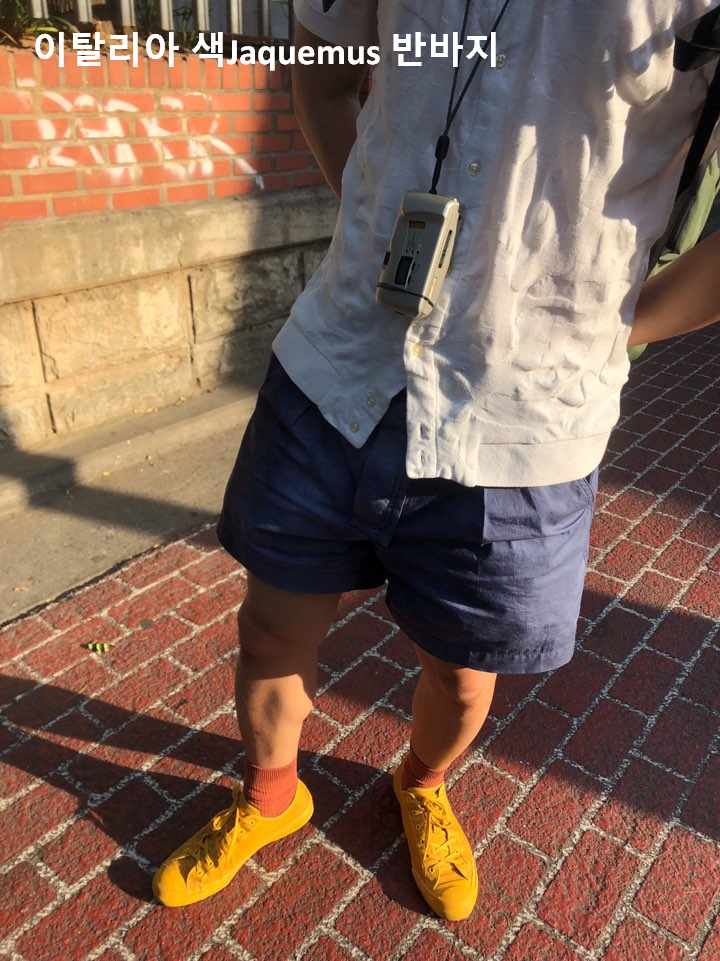

단순 취향이라 할지라도 숙성된 취향에는 좋은 향이 난다고합니다. 저는 천천히 쌓아가는 오래된 취향을 선호하는 편입니다. 스무살 초반부터 모은 철학책들이 그러하고 3년째 탐구하는 모카포트 커피가 그러하고 옷장에 쌓인 색색들이 옷들이 그러합니다.
옷을 좋아합니다. 저의 옷 취향으로 말할 것 같으면 'Color'라고 하고 싶습니다. 처음 옷이 좋아졌을 무렵부터 남들보다 튀고 싶었고 남들과는 다르고 싶었습니다. 내가 입은 옷을 길거리에서 몇번 마주치기라도 하거나 내가 즐겨입는 브랜드가 유명해지기라도 하면 얼른 다른 브랜드, 구하기 힘든 옷 등으로 갈아 탔던 것 같습니다. 그러다보니 자연스레 더 특이한 패턴, 더 튀는 색의 옷들로 옷장이 채워졌습니다. 그런 옷들을 구하기 위해서는 패션정보를 가장 빠르게 접해야만 했고 더욱 더 희귀한 브랜드, 옷을 찾기 위해 '디깅'을 했었던 것 같습니다. 그리고 어렵게 찾아낸 브랜드에는 그만큼의 애정과 충성도가 생기지 않았나 싶습니다. 사실 모든 정보가 공유되는 시대에 '나만 알고 있는 브랜드'라는 것은 없을 것입니다. 다만, 같은 브랜드를 알고 같은 옷을 입는다 하더라도 오랫동안 다져온 취향, 애정에는 더 깊은 맛이 날 것입니다.
정보가 넘쳐나는 요즘 시대에 기본적인 정보나 지식은 어디서나 쉽게 구할 수 있습니다. 블로그, 유튜브 등 각종 미디어들이 제공하는 정보의 바다에서 매거진이 소비자들에게 매력적으로 다가가기 위해서는 쉽게 접할 수 있는 소식과는 차별화된 컨텐츠는 필수적일 것입니다. 어느 매체에서나 신속한 정보 전달은 가능합니다. 이런 시대에서 에디터들의 역할은 독자들에게 에디터의 취향이 듬뿍 묻어나는 새로운 컨텐츠를 제안하는 것이라고 생각합니다. 저는 다져진 저의 취향을 바탕으로 매거진 고객들에게 보다 빠르고, 보다 새롭고, 보다 재미있는 브랜드 스토리와 제품을 소개하고 싶습니다.
좋아하는 브랜드: Martine Rose, Converse
  